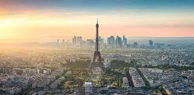

Немного о городе
И сегодня Париж сохраняет всю свою важность, триумфальное величие и шарм, несмотря на то, что его облик меняется такими стройками, как Бобур и амбициозной строительной программой «Большие Проекты», осуществлявшейся во время президентства Франсуа Миттерана. Кроме Большой рки Дефанс и Оперы Бастилия, проекты Миттерана включали реновацию Лувра архитектором Пе, комплекс Ля Вилетт на северо-восточной окраине города, а на юго-востоке — Библиотеку Франции, которую оснастили компьютерами по последнему слову техники. Ежедневно в Париж приезжают на работу или учёбу более 850 тысяч человек, а около 200 тысяч парижан работают в пригородах. Рост Большого Парижа происходит по двум осям, вытянутым вдоль Сены, за счёт строительства пяти новых пригородов на 300—500 тысяч каждый. Эти города связаны с Парижем линиями скоростных железных и автомобильных дорог, но значительная часть их жителей работает на месте. Столица опоясана скоростной автомобильной кольцевой дорогой — бульваром Периферик — соединённой с радиальными автострадами и всей сетью автомобильных дорог Франции, ядром которой она является.
Достопримечательности
1.Эйфелева башня
Э́йфелева ба́шня — металлическая башня в центре Парижа, самая узнаваемая его архитектурная достопримечательность. Названа в честь главного конструктора Гюстава Эйфеля; сам Эйфель называл её просто «300-метровая башня». Башня, впоследствии ставшая символом Парижа, была построена в 1889 году и первоначально задумывалась как временное сооружение, служившее входной аркой парижской Всемирной выставки 1889 года. Эйфелеву башню называют самой посещаемой платной и самой фотографируемой достопримечательностью мира.

2.Триумфальная арка
Триумфальная арка — монумент в 8-м округе Парижа на площади Шарля де Голля (Звезды), возведённый в 1806—1836 годах по проекту архитектора французского ампира Жана-Франсуа Шальгрена. Проект арки «в древнеримском стиле» был разработан по распоряжению Наполеона Бонапарта в ознаменование побед его «Великой армии». За основу была взята композиция однопролётной Триумфальной арки Тита на римском Форуме. После смерти Шальгрена в 1811 году строительство продолжал архитектор Жан-Арно Реймон.